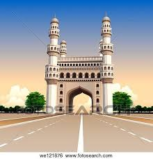

Andhra Pradesh, locared on the southeastern, is a popular destination in Southern India. Andhra Pradesh tourism is known as Kohinoor of India. Many tourists from India and outside India visit this place around the year to visit the beaches, temples, and hill stations in this state.  Andhra Pradesh tourism is mainly concentrate on the beach tours and religious tours
.Hyderabad is the capital of Andhra Pradesh. One of the metropolitan cities, Hyderabad has a number of sightseeing sites for the tourists. Various mosques, markets, brides, lakes, hills etc are house in this city. Salar Jung Museum & Charminar are the most popular destinations in the city.
Located on the delta of Krishna River, Vijaywada is a famous destination in Andhra Pradesh. The city is known for its railway station. Krishna River along with its surrounding valleys offer beautiful sightseeing sites. Surrounded by hills, this city offer some amazing natural sites.
Located on the northern part of the state, Warangal is a place of historical importance You can visit the Ancient Temples, Antiques, & Relics of 12th century AD. The Pristine lakes &amazing range of wildlife are the main focuses for the natural lovers in this city.
Located on the banks of Krishna River, this samll city is a popular destination for weekend trips. The major attractions of this city are the Nallamalau Hills, Dams, & some Ancient Temples. If you want to visit wildlife in this city, you can visit the Hill Forests.
Popularity known as Vizag, Vishakhapatnam is a developed industrial area and popular tourist destination. The main attractions of this city are the beaches, beautiful beaches, and enchanting valleys.
Located in Chittoor, Tirupati is located on the southeastern part of the state. It is one of the most popular pilgrimage centers for the Hindus.